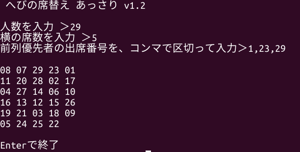

へびの席替え🐍
席替えをすばやく、公平に。
へびの席替えはPythonで書かれた席替えソフトウェアです。
CUI
出席番号で席替え
前列優先者の指定機能付き
GitHubからダウンロード🐱

GUI版も今後作るかも。。。。。 なまえは「へびの席替え こってり」!?
このソフトウェアは、MITライセンスのもとで公開しています。
簡単に言えば、使用も、再配布も、改変も、すべてOK というライセンスです。